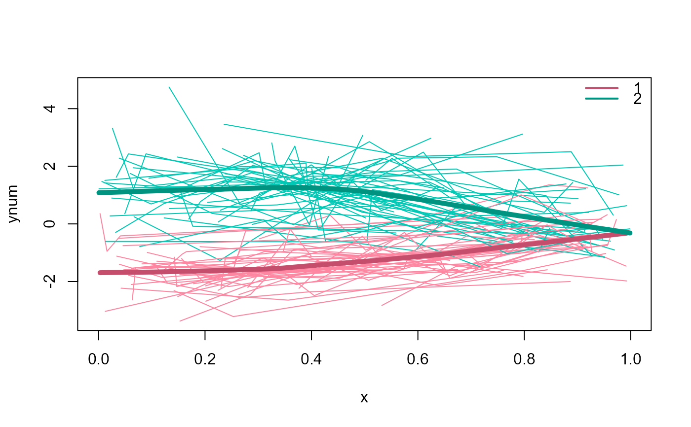
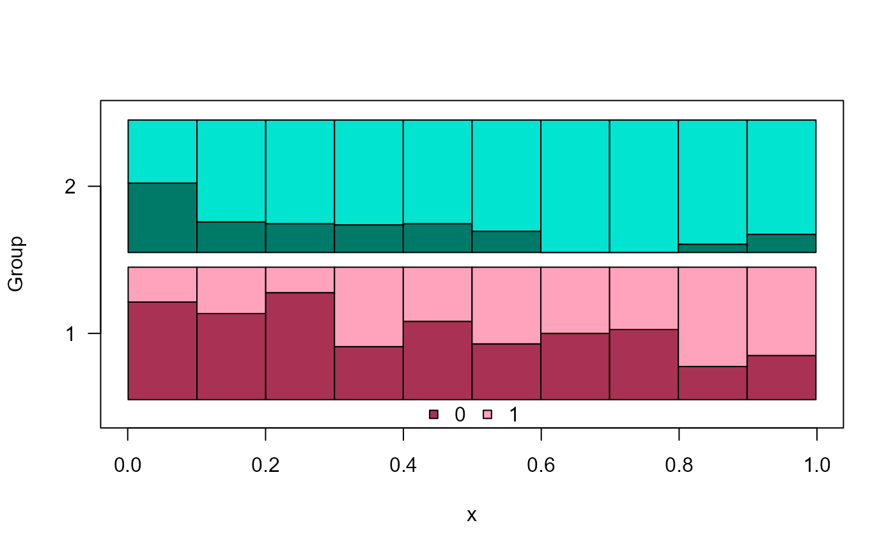
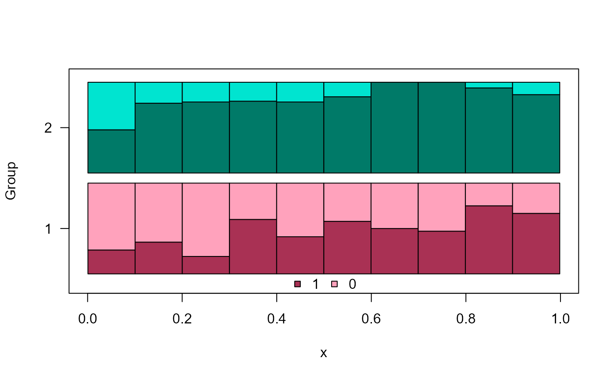
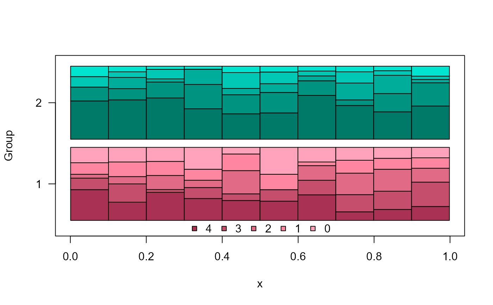
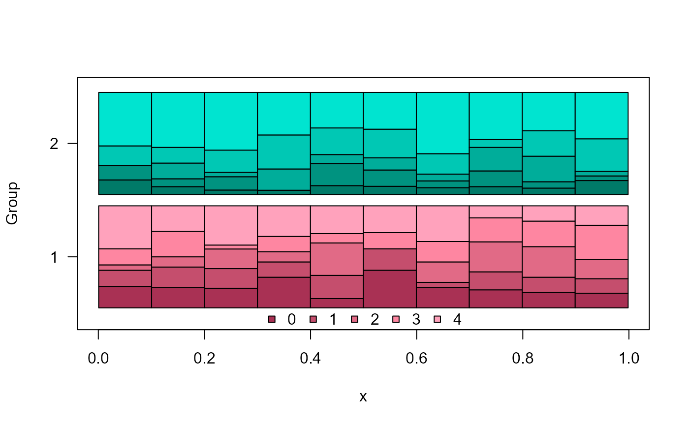
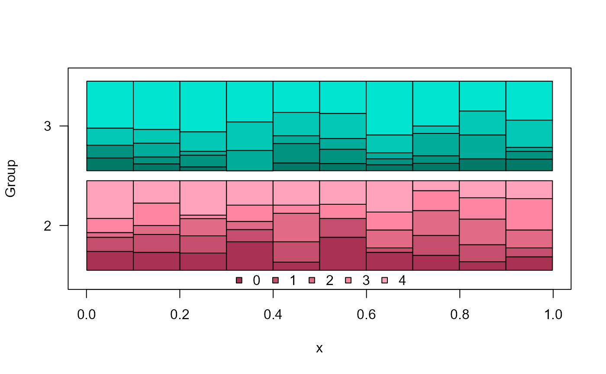
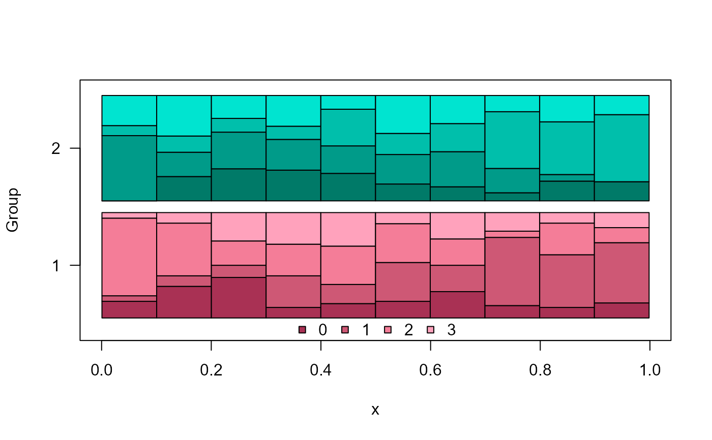
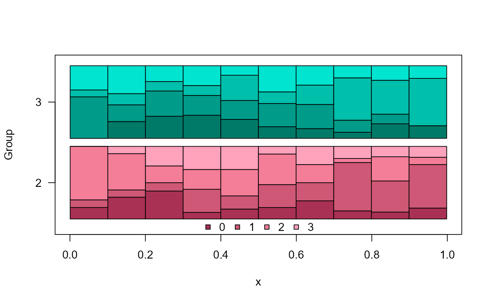

Plot Clustered Longitudinal (Panel) Data
plot_cat_vs_x_grouped.RdFunctions that work with longitudinal data and plot the outcomes vs a covariate with respect to some grouping, e.g. clustering found by clustGLMM.
Usage
plot_num_vs_x_grouped(data, y = "y", x = "x", group, id = "i", units,
xbreaks, add_lowess = TRUE, alpha = 0.7,
legend_placement = "topright")
plot_cat_vs_x_grouped(data, y = "y", x = "x", group,
xbreaks, main = NA, margin = 0.05, reverse = FALSE)Arguments
- data
a
data.framecontainingy,x,group,id.- y
a name of the outcome to be plotted.
- x
a name of numeric or factor regressor.
- group
a name of the clustering variable that divides different ids into groups. If missing, all observations are given the label "0" plotted with
slategray.colorsandlegend_placementis set by default toNULL.- id
a name of the id variable.
- units
a vector of unit ids to be plotted, if missing all ids are plotted.
- xbreaks
a set of breaks along which to cut regressor
x, if missingxis divided equidistantly into 10 categories.- add_lowess
a Boolean whether to add lowess curves for each group label.
- alpha
a color transparency factor; applied only for overlapping boxplots if covariate
xisfactor.- main
plot title to be printed above the plot.
- margin
how far from each other should different groups be displayed.
- reverse
a Boolean whether to reverse the order of ordinal categories; if
TRUE0 on top, ifFALSE0 at the bottom.- legend_placement
a string describing the position of legend (see
legend) orNULLto omit the legend.
Details
Colors are created automatically by rainbow_hcl from package colorspace.
slategray.colors are used for group 0 (unclassified).
Output of plot_num_vs_x_grouped depends on the type of covariate x:
- factor
boxplots of the outcome
ywrt levels of covariatexwith a transparent color determined bygroup. Boxplots for the same group may overlap, hence, transparent colors.- numeric
spaghetti-plots the outcome
ywrt covariatexcolored bygroup. Only units included inunitsare plotted.
If x is not already a factor, plot_cat_vs_x_grouped divides the data by a numeric covariate x into groups divided by xbreaks.
Then, for each group label in group (including group 0 = unclassified) a spineplot capturing the evolution of proportions of a categorical outcome y wrt the covariate x.
References
Vávra, J., Komárek, A., Grün, B., Malsiner-Walli, G. Clusterwise multivariate regression of mixed-type panel data. Stat Comput 34, 46 (2024). https://doi.org/10.1007/s11222-023-10304-5
Examples
### Get some longitudinal mixed type data
### here generated by generate_longitudinal_mixed_type_data()
data("longitudinal_mixed_type_data")
# Examples here demonstrate the basic use of the available functions on a toy dataset.
# For more thorough analyses see the vignettes.
###-----------------------------------------------------------------------------
### Prepare inputs for clustGLMM()
###-----------------------------------------------------------------------------
id <- "i"
family <- c("num", "poi", "bin", "ord", "cat")
names(family) <- Ys <- c("ynum", "ypoi", "ybin", "yord", "ycat")
## Create list of formulae for each outcome
formula <- list()
for(y in Ys){
formula[[y]] <- list()
formula[[y]]$fixed <- ~ f
formula[[y]]$group <- ~ x
formula[[y]]$random <- ~ 1
formula[[y]]$offset <- ""
}
formula
#> $ynum
#> $ynum$fixed
#> ~f
#> <environment: 0x000001cfda7a07e8>
#>
#> $ynum$group
#> ~x
#> <environment: 0x000001cfda7a07e8>
#>
#> $ynum$random
#> ~1
#> <environment: 0x000001cfda7a07e8>
#>
#> $ynum$offset
#> [1] ""
#>
#>
#> $ypoi
#> $ypoi$fixed
#> ~f
#> <environment: 0x000001cfda7a07e8>
#>
#> $ypoi$group
#> ~x
#> <environment: 0x000001cfda7a07e8>
#>
#> $ypoi$random
#> ~1
#> <environment: 0x000001cfda7a07e8>
#>
#> $ypoi$offset
#> [1] ""
#>
#>
#> $ybin
#> $ybin$fixed
#> ~f
#> <environment: 0x000001cfda7a07e8>
#>
#> $ybin$group
#> ~x
#> <environment: 0x000001cfda7a07e8>
#>
#> $ybin$random
#> ~1
#> <environment: 0x000001cfda7a07e8>
#>
#> $ybin$offset
#> [1] ""
#>
#>
#> $yord
#> $yord$fixed
#> ~f
#> <environment: 0x000001cfda7a07e8>
#>
#> $yord$group
#> ~x
#> <environment: 0x000001cfda7a07e8>
#>
#> $yord$random
#> ~1
#> <environment: 0x000001cfda7a07e8>
#>
#> $yord$offset
#> [1] ""
#>
#>
#> $ycat
#> $ycat$fixed
#> ~f
#> <environment: 0x000001cfda7a07e8>
#>
#> $ycat$group
#> ~x
#> <environment: 0x000001cfda7a07e8>
#>
#> $ycat$random
#> ~1
#> <environment: 0x000001cfda7a07e8>
#>
#> $ycat$offset
#> [1] ""
#>
#>
# intercept term will be group-specific
# since it appears in $group which has a preference over $fixed
## All other inputs need to be prepared,
## unless the default values are desired (varying, save, howsave, param, tuning).
## See the vignette for how these can be adjusted.
###-----------------------------------------------------------------------------
### Calling clustGLMM()
###-----------------------------------------------------------------------------
Gmax <- 5 # maximal number of mixture components to be considered
nchains <- 2 # number of chains to be sampled
## No inits specified
set.seed(123456789)
mcmc <- clustGLMM(formula = formula, id = id, family = family,
data = longitudinal_mixed_type_data,
G = Gmax, iter = 100, nchains = nchains)
#> Inits are missing, calculating...
#> Inits are ready.
#> Settings ready, about to start for ch in 1:nchains.
#> Inits for chain 1 are ready.
#> Triggering C function.
#>
#> Chain: 1, (1 %)
Chain: 1, (2 %)
Chain: 1, (3 %)
Chain: 1, (4 %)
Chain: 1, (5 %)
Chain: 1, (6 %)
Chain: 1, (7 %)
Chain: 1, (8 %)
Chain: 1, (9 %)
Chain: 1, (10 %)
Chain: 1, (11 %)
Chain: 1, (12 %)
Chain: 1, (13 %)
Chain: 1, (14 %)
Chain: 1, (15 %)
Chain: 1, (16 %)
Chain: 1, (17 %)
Chain: 1, (18 %)
Chain: 1, (19 %)
Chain: 1, (20 %)
Chain: 1, (21 %)
Chain: 1, (22 %)
Chain: 1, (23 %)
Chain: 1, (24 %)
Chain: 1, (25 %)
Chain: 1, (26 %)
Chain: 1, (27 %)
Chain: 1, (28 %)
Chain: 1, (29 %)
Chain: 1, (30 %)
Chain: 1, (31 %)
Chain: 1, (32 %)
Chain: 1, (33 %)
Chain: 1, (34 %)
Chain: 1, (35 %)
Chain: 1, (36 %)
Chain: 1, (37 %)
Chain: 1, (38 %)
Chain: 1, (39 %)
Chain: 1, (40 %)
Chain: 1, (41 %)
Chain: 1, (42 %)
Chain: 1, (43 %)
Chain: 1, (44 %)
Chain: 1, (45 %)
Chain: 1, (46 %)
Chain: 1, (47 %)
Chain: 1, (48 %)
Chain: 1, (49 %)
Chain: 1, (50 %)
Chain: 1, (51 %)
Chain: 1, (52 %)
Chain: 1, (53 %)
Chain: 1, (54 %)
Chain: 1, (55 %)
Chain: 1, (56 %)
Chain: 1, (57 %)
Chain: 1, (58 %)
Chain: 1, (59 %)
Chain: 1, (60 %)
Chain: 1, (61 %)
Chain: 1, (62 %)
Chain: 1, (63 %)
Chain: 1, (64 %)
Chain: 1, (65 %)
Chain: 1, (66 %)
Chain: 1, (67 %)
Chain: 1, (68 %)
Chain: 1, (69 %)
Chain: 1, (70 %)
Chain: 1, (71 %)
Chain: 1, (72 %)
Chain: 1, (73 %)
Chain: 1, (74 %)
Chain: 1, (75 %)
Chain: 1, (76 %)
Chain: 1, (77 %)
Chain: 1, (78 %)
Chain: 1, (79 %)
Chain: 1, (80 %)
Chain: 1, (81 %)
Chain: 1, (82 %)
Chain: 1, (83 %)
Chain: 1, (84 %)
Chain: 1, (85 %)
Chain: 1, (86 %)
Chain: 1, (87 %)
Chain: 1, (88 %)
Chain: 1, (89 %)
Chain: 1, (90 %)
Chain: 1, (91 %)
Chain: 1, (92 %)
Chain: 1, (93 %)
Chain: 1, (94 %)
Chain: 1, (95 %)
Chain: 1, (96 %)
Chain: 1, (97 %)
Chain: 1, (98 %)
Chain: 1, (99 %)
Chain: 1, (100 %)
#> Sampling of chain 1 is completed.
#> Saving the last state of chain 1 is completed.
#> Saving chain 1 is completed.
#> Inits for chain 2 are ready.
#> Triggering C function.
#>
#> Chain: 2, (1 %)
Chain: 2, (2 %)
Chain: 2, (3 %)
Chain: 2, (4 %)
Chain: 2, (5 %)
Chain: 2, (6 %)
Chain: 2, (7 %)
Chain: 2, (8 %)
Chain: 2, (9 %)
Chain: 2, (10 %)
Chain: 2, (11 %)
Chain: 2, (12 %)
Chain: 2, (13 %)
Chain: 2, (14 %)
Chain: 2, (15 %)
Chain: 2, (16 %)
Chain: 2, (17 %)
Chain: 2, (18 %)
Chain: 2, (19 %)
Chain: 2, (20 %)
Chain: 2, (21 %)
Chain: 2, (22 %)
Chain: 2, (23 %)
Chain: 2, (24 %)
Chain: 2, (25 %)
Chain: 2, (26 %)
Chain: 2, (27 %)
Chain: 2, (28 %)
Chain: 2, (29 %)
Chain: 2, (30 %)
Chain: 2, (31 %)
Chain: 2, (32 %)
Chain: 2, (33 %)
Chain: 2, (34 %)
Chain: 2, (35 %)
Chain: 2, (36 %)
Chain: 2, (37 %)
Chain: 2, (38 %)
Chain: 2, (39 %)
Chain: 2, (40 %)
Chain: 2, (41 %)
Chain: 2, (42 %)
Chain: 2, (43 %)
Chain: 2, (44 %)
Chain: 2, (45 %)
Chain: 2, (46 %)
Chain: 2, (47 %)
Chain: 2, (48 %)
Chain: 2, (49 %)
Chain: 2, (50 %)
Chain: 2, (51 %)
Chain: 2, (52 %)
Chain: 2, (53 %)
Chain: 2, (54 %)
Chain: 2, (55 %)
Chain: 2, (56 %)
Chain: 2, (57 %)
Chain: 2, (58 %)
Chain: 2, (59 %)
Chain: 2, (60 %)
Chain: 2, (61 %)
Chain: 2, (62 %)
Chain: 2, (63 %)
Chain: 2, (64 %)
Chain: 2, (65 %)
Chain: 2, (66 %)
Chain: 2, (67 %)
Chain: 2, (68 %)
Chain: 2, (69 %)
Chain: 2, (70 %)
Chain: 2, (71 %)
Chain: 2, (72 %)
Chain: 2, (73 %)
Chain: 2, (74 %)
Chain: 2, (75 %)
Chain: 2, (76 %)
Chain: 2, (77 %)
Chain: 2, (78 %)
Chain: 2, (79 %)
Chain: 2, (80 %)
Chain: 2, (81 %)
Chain: 2, (82 %)
Chain: 2, (83 %)
Chain: 2, (84 %)
Chain: 2, (85 %)
Chain: 2, (86 %)
Chain: 2, (87 %)
Chain: 2, (88 %)
Chain: 2, (89 %)
Chain: 2, (90 %)
Chain: 2, (91 %)
Chain: 2, (92 %)
Chain: 2, (93 %)
Chain: 2, (94 %)
Chain: 2, (95 %)
Chain: 2, (96 %)
Chain: 2, (97 %)
Chain: 2, (98 %)
Chain: 2, (99 %)
Chain: 2, (100 %)
#> Sampling of chain 2 is completed.
#> Saving the last state of chain 2 is completed.
#> Saving chain 2 is completed.
#> All chains have been sampled.
###-----------------------------------------------------------------------------
### Clustering based on not post-processed data (using sampled indicators)
###-----------------------------------------------------------------------------
### Take the sampled U indicators
threshold <- 0.5 # if not exceeded, unit remains unclassified
# posterior mode of Gplus=number of non-empty components
mcmc$modeGplus
#> [1] 2 3
# labels of non-empty clusters in each chain
mcmc$clusters
#> [[1]]
#> [1] 2 3
#>
#> [[2]]
#> [1] 1 2 5
#>
# clustering based on sampled indicators
myclustering <- mcmc$clustering
# the highest estimated clustering probability among all clusters
mcmc$certainty
#> [,1] [,2]
#> 1 1.00 0.98
#> 2 0.96 0.55
#> 3 1.00 0.95
#> 4 0.97 0.93
#> 5 1.00 0.95
#> 6 0.97 0.69
#> 7 0.99 0.81
#> 8 0.99 0.93
#> 9 0.98 1.00
#> 10 0.95 0.96
#> 11 0.93 0.75
#> 12 1.00 0.91
#> 13 0.98 0.95
#> 14 0.97 0.62
#> 15 0.99 1.00
#> 16 1.00 0.81
#> 17 0.99 0.74
#> 18 1.00 0.95
#> 19 0.99 0.56
#> 20 0.98 0.95
#> 21 0.71 0.51
#> 22 0.96 0.92
#> 23 0.98 0.79
#> 24 0.98 0.99
#> 25 0.99 0.95
#> 26 0.99 0.98
#> 27 0.99 0.89
#> 28 0.99 0.97
#> 29 0.93 0.59
#> 30 0.98 0.77
#> 31 0.99 0.89
#> 32 0.96 0.88
#> 33 0.98 1.00
#> 34 0.98 0.57
#> 35 0.99 0.76
#> 36 0.97 0.73
#> 37 0.99 0.80
#> 38 0.97 0.57
#> 39 1.00 0.97
#> 40 0.98 0.68
#> 41 0.99 0.95
#> 42 0.95 1.00
#> 43 1.00 0.63
#> 44 0.97 0.99
#> 45 0.99 0.94
#> 46 0.99 0.55
#> 47 0.94 0.96
#> 48 0.99 0.98
#> 49 0.75 0.66
#> 50 0.97 0.78
#> 51 0.97 0.95
#> 52 0.99 0.85
#> 53 1.00 0.99
#> 54 1.00 0.79
#> 55 1.00 0.99
#> 56 0.98 0.68
#> 57 1.00 0.98
#> 58 0.99 0.89
#> 59 0.99 0.99
#> 60 1.00 0.96
#> 61 1.00 0.54
#> 62 0.99 0.72
#> 63 1.00 0.97
#> 64 1.00 0.93
#> 65 0.99 0.95
#> 66 1.00 1.00
#> 67 0.99 0.96
#> 68 0.99 1.00
#> 69 1.00 0.99
#> 70 0.98 0.67
#> 71 0.74 0.80
#> 72 0.96 0.53
#> 73 0.85 0.71
#> 74 0.98 0.99
#> 75 0.88 0.89
#> 76 0.93 0.98
#> 77 0.98 0.71
#> 78 1.00 0.64
#> 79 1.00 0.97
#> 80 1.00 0.92
#> 81 1.00 0.98
#> 82 0.68 0.52
#> 83 0.98 0.92
#> 84 0.96 0.87
#> 85 1.00 0.70
#> 86 0.97 0.52
#> 87 0.98 0.97
#> 88 0.94 0.99
#> 89 0.99 0.95
#> 90 0.99 0.95
#> 91 1.00 0.75
#> 92 0.99 0.97
#> 93 0.90 1.00
#> 94 0.97 0.94
#> 95 0.99 0.99
#> 96 0.98 0.99
#> 97 0.98 0.99
#> 98 1.00 0.97
#> 99 1.00 0.96
#> 100 1.00 0.99
# units with frequency ratio smaller than chosen threshold remain unclassified (group 0)
myclustering[mcmc$certainty < threshold] <- 0
clusters <- list()
# proposed clustering by each chain separately
for(ch in 1:mcmc$nchains){
longitudinal_mixed_type_data[,paste0("clustering",ch)] <-
myclustering[longitudinal_mixed_type_data[,id],ch]
longitudinal_mixed_type_data[,paste0("certainty",ch)] <-
mcmc$certainty[longitudinal_mixed_type_data[,id],ch]
}
data1 <- longitudinal_mixed_type_data[longitudinal_mixed_type_data$j==1,]
# Confusion matrices for each chain separately:
table(data1$clustering1, data1$g)
#>
#> 1 2
#> 2 50 2
#> 3 1 47
# We can also see the suitable permutation for labels
###-----------------------------------------------------------------------------
### Plotting the resulting clustering
###-----------------------------------------------------------------------------
# Plotting numeric outcomes
plot_num_vs_x_grouped(longitudinal_mixed_type_data, y = "ynum", x = "x",
group = "g", id = "i", units = 1:mcmc$n)

plot_num_vs_x_grouped(longitudinal_mixed_type_data, y = "ynum", x = "x",
group = "clustering1", id = "i", units = 1:mcmc$n)
# Plotting binary, ordinal, categorical outcomes
plot_cat_vs_x_grouped(longitudinal_mixed_type_data, y = "ybin", x = "x",
group = "g")

plot_cat_vs_x_grouped(longitudinal_mixed_type_data, y = "ybin", x = "x",
group = "g", reverse = TRUE)

plot_cat_vs_x_grouped(longitudinal_mixed_type_data, y = "ybin", x = "x",
group = "clustering1")
plot_cat_vs_x_grouped(longitudinal_mixed_type_data, y = "yord", x = "x",
group = "g", reverse = TRUE)

plot_cat_vs_x_grouped(longitudinal_mixed_type_data, y = "yord", x = "x",
group = "g", reverse = FALSE)

plot_cat_vs_x_grouped(longitudinal_mixed_type_data, y = "yord", x = "x",
group = "clustering1")

plot_cat_vs_x_grouped(longitudinal_mixed_type_data, y = "ycat", x = "x",
group = "g")

plot_cat_vs_x_grouped(longitudinal_mixed_type_data, y = "ycat", x = "x",
group = "clustering1")
